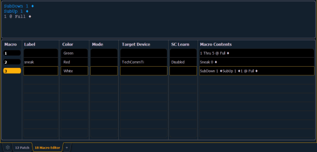

Macro Editor Display
Macro editing is accomplished from the macro editor display. As an alternative to recording your macro in live, you may create it from this display instead. Open the macro editor display by pressing [Macro] [Marco], from the browser by navigating to Record Target Lists > Macro Editor, or press [Tab] [1] [8].
The display is divided horizontally, the top portion displays the macro contents in detail while the bottom portion lists all macros, including the label and contents. Text that displays in blue indicates a console event, and commands will display in gray text.

While in the macro editor display, any numeric entry on the command line is assumed to be a macro number. If the macro number entered already exists and [Enter] is pressed, the macro list will page to the selected macro and the macro content detail section will display all of the contents of the selected macro. If the macro number entered does not exist in the list and [Enter] is pressed, an empty macro will be created with the specified macro number.
While in the macro editor display, the following functions may be performed using the control keypad and softkeys:
- [Label] - when a macro is selected and [Label] is pressed, the alphanumeric keypad will display on the CIA. Label the macro and press [Enter].
- [1] [Label] <name> [Enter] - labels macro 1
- [Delete] - when a macro is selected and [Delete] [Enter] is pressed, you will be prompted to confirm the deletion of the selected macro. To confirm press [Enter], to abort press [Clear].
- [1] [Delete] [Enter] [Enter] - deletes macro 1 from the list.
- [Copy To] - when a macro is selected and [Copy To] is pressed, you will be prompted to enter the macro number that you want to copy the contents of the selected macro to. You will be prompted to confirm the copy process, press [Enter] to confirm or [Clear] to abort the copy to process.
- [1] [Copy To] [6] [Enter] [Enter] - copies the entire contents of macro 1 to macro 6.
- {Edit} - when a macro is selected and {Edit} is pressed, you will have entered edit mode for the selected macro. See Edit an Existing Macro for more information. Three notable changes to your macro editor display include:
- a blinking cursor in the macro content detail portion (top) of the display.
- ”Press [Select] to save or [Escape] to cancel changes”displays above the command line.
- {Move To} - allows you to move and reorganize your macros anywhere in the macro list numerically. You can access {Move To} by pressing [Copy To] twice.
- For instance, if you have macros 1 through 5 in the list, and you want to move/ change macro 1 to macro 6 so that your most commonly used macros are first in the list, you would press [1] {Move To} [6] [Enter]. This leaves only macros 2 through 6 in the list.
- {Mode} - allows you to assign different modes for the macro to run in. There are three modes: background, foreground, and default.
- {Default}
- When a macro in default mode is run manually, it runs in the foreground(i.e., the command line) on the device that fired it. When a macro in default mode is executed by a cue or via show control, it runs in the background on the master device.
- Running a macro on a master device only matters when the macro changes the displays of the device it runs on such as snapshot and flexichannel macros.
- {Background}
- When a macro in background mode is run manually, it runs on the device that fired it but will not affect its command line.
- A macro in background mode that is run from a cue or via show control will run on the master device but will not affect the master's command line.
- When a background macro is running and includes a link to another macro, or is currently waiting, pressing the [Macro] button will stop it.
- {Foreground}
- When a macro in foreground mode is run manually, it runs on the device that fired it and affects its command line.
- If a foreground mode macro is fired via show control, it runs on the master device and will affect its command line.
- If a cue fires the macro, it will run on the device whose user last pressed [Go] on that playback. If a foreground macro is fired from a cue that is executed from another cue list, the macro will run on the device that last pressed [Go] on the cue’s playback but not the playback that triggered the executed cue.
- {Target Device} - A macro can have a Target Device assigned to it. This allows a cue to execute a macro only on a certain console.
- The Target Device can be a device name or User ID. These are assigned to a macro in the Macro Display by using the {Target} softkey and either selecting {Device} and {User}. Pressing {Target} will also display a list of connected devices and additional target options.
{SC Learn} - enables or disables excluding specific macros from being learned as show control events. See Adding Events using Learn Mode for more information.